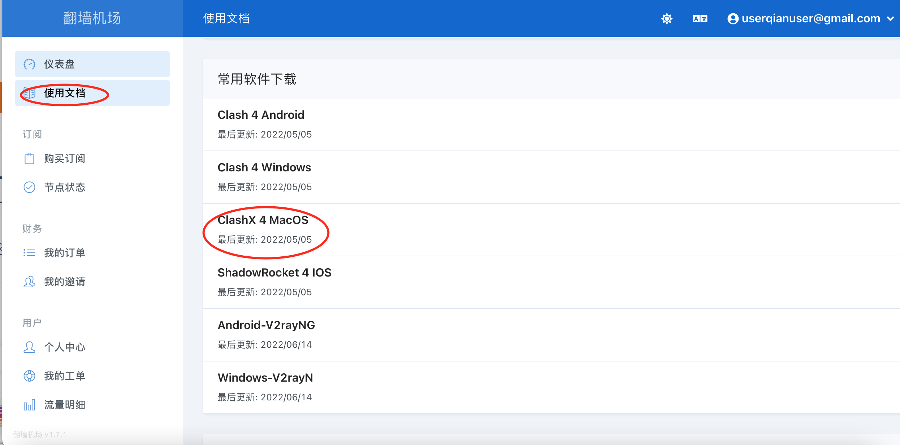
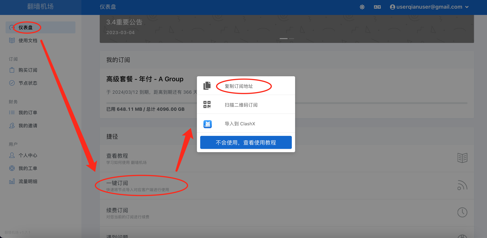
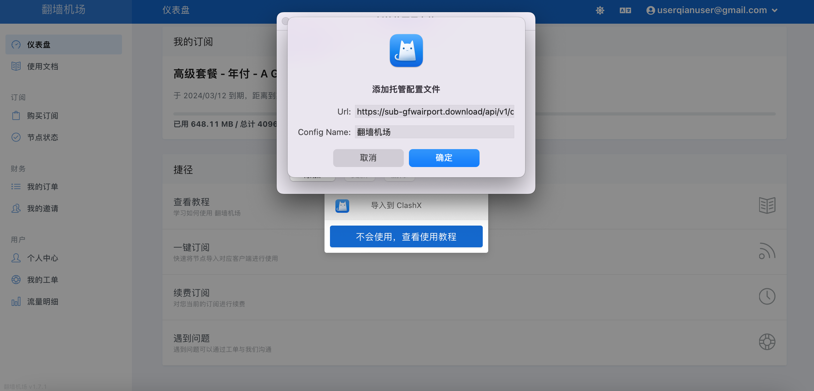
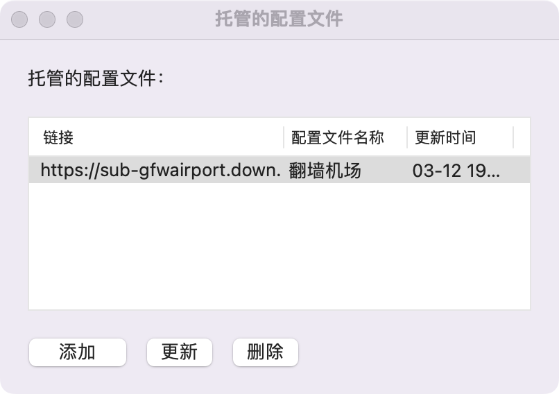
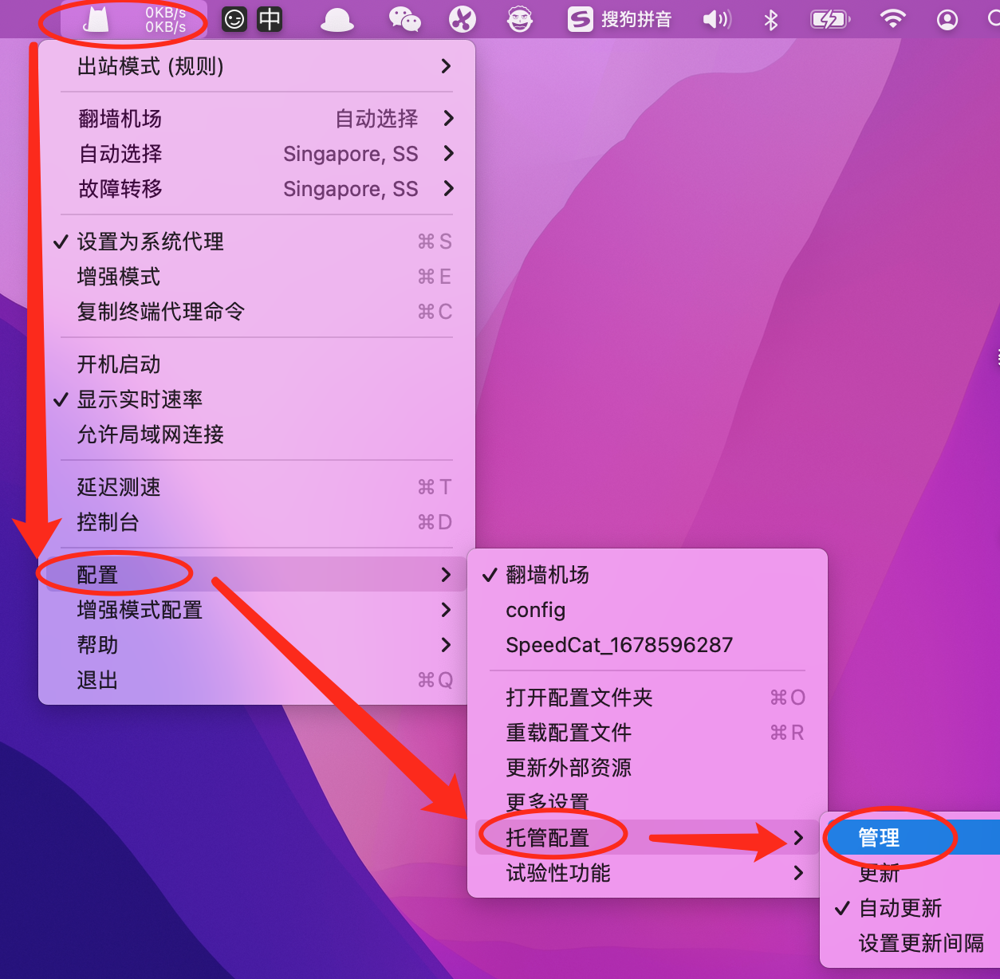
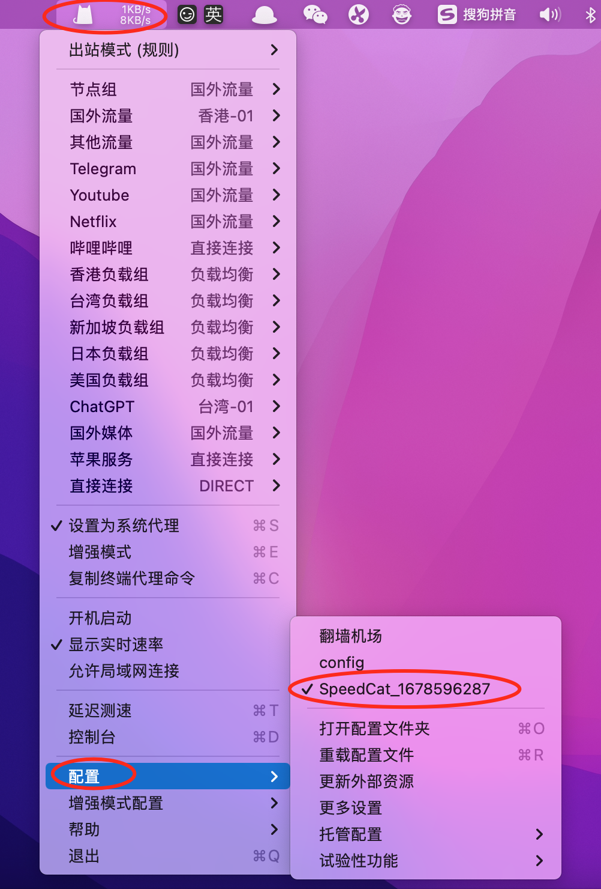
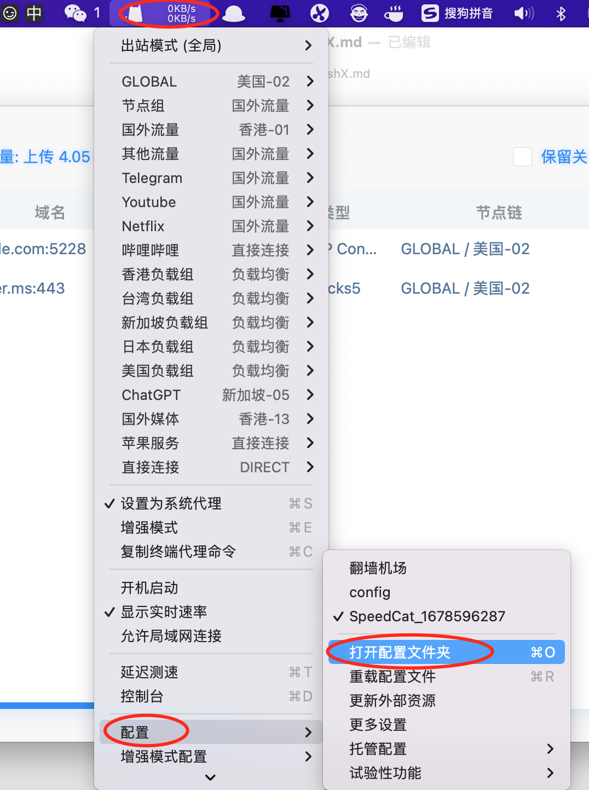
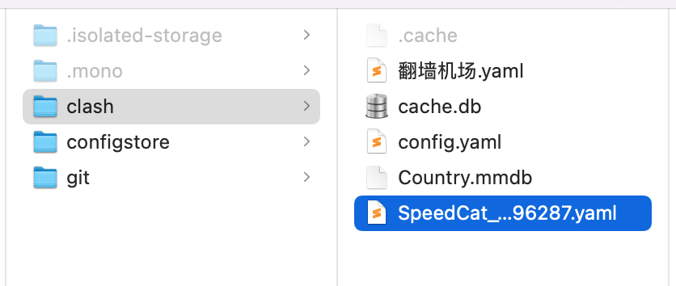

title: 科学上网_ClashX
date: 2019-06-19 18:02:45
categories:
[TOC]
1、先使用旧方式，科学上网。
2、利用旧的科学上网方式，使用gmail邮箱注册并登录
| 描述 | 地址 | 账号 |
|---|---|---|
| 翻墙机场 | 翻墙机场 https://xn–mest5a943ag8x.com/#/dashboard | userqianuser@gmail.com |
| 闪电猫 | https://speedcat-aff.com/user/profile | dvlproad@163.com |
| 更多🪜 | 梯子导航: tzdaohang.com |
示例：

3、

导入到ClashX

导入后的结果：

你也可以使用这个方式


使用SpeedCat
有时候，我们无法安装支持ClashX的软件。而导致我们只能把ClashX中的代理信息提取出来，再添加到软件上。
那ClashX的代理信息怎么提取呢？
答：

打开配置文件夹。

用记事本或者Sublime Text等打开上述yaml，查看里面的信息即可看到每个节点使用的服务器、端口、加密方式、密码等信息。将它们手动输入到你的软件即可（目前我用的软件是Patatso，因为ShadowSockt下载需要付费还没绑卡）。